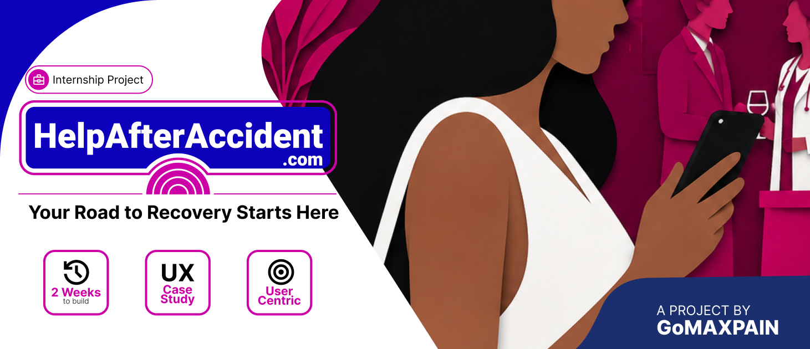
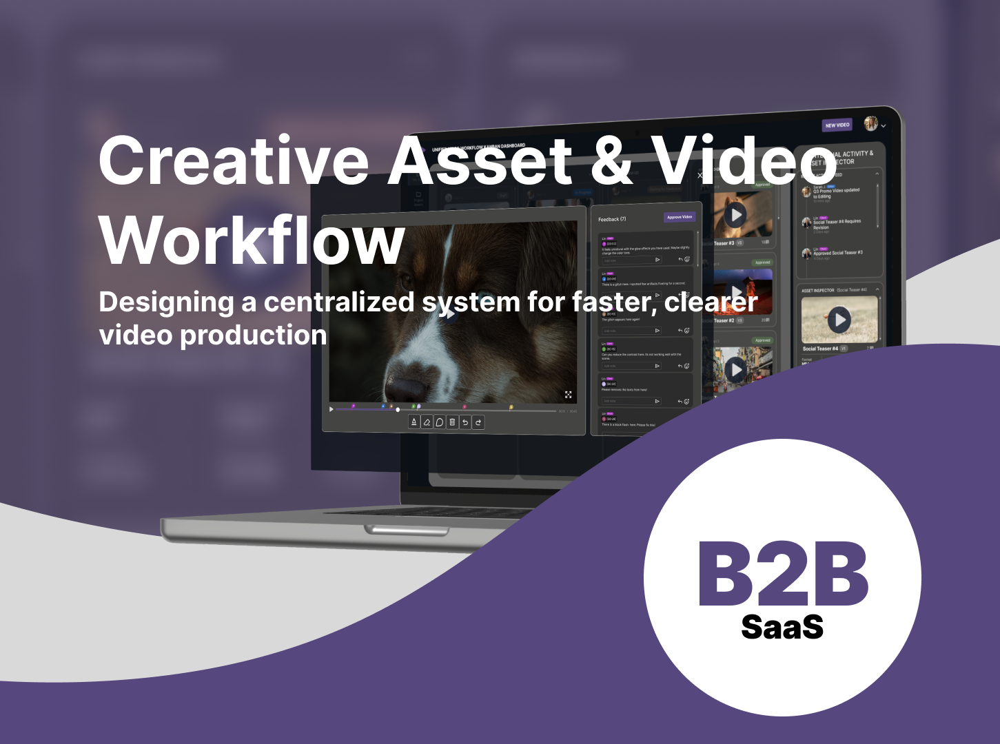
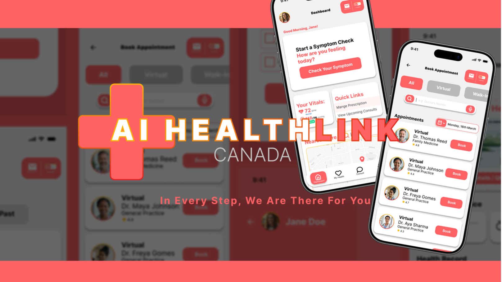

Product designer Open to work
I make complicated things easier to use.
I'm Noibedya. I design the flows people can't skip: onboarding, intake, signup. Right now I'm doing that for a legal and medical referral platform.
Selected work
Case studies
One internship case study and two concept projects, all written the way they actually happened: what I tried, what didn't work, and what I'd do differently.

Legal-medical referral · 2-week internship · Mobile + desktop
HelpAfterAccident.com
In two weeks at GoMAXPAIN (a legal-medical referral startup), I designed signup and intake for five different kinds of users (doctors, lawyers, patients, marketers, and influencers) on one platform. The tricky part was patient intake: I ended up building four versions before one felt right for someone filling it out after a car accident.
Read the case study →
B2B SaaS · 4-week concept · Desktop web
Creative Asset & Video Workflow
Video production runs on Slack threads and forwarded emails. This concept tool is the alternative: a production board, task cards, and a no-login review link where clients leave timestamped feedback without creating an account. Research came from interviews with editors and my own motion-graphics work.
Read the case study →
Healthcare · 4-week concept · iOS + tablet
AI Health Link Canada
Canada's healthcare is hard to navigate even when you're not sick. This concept project is an AI triage and booking tool: symptom check with an emergency gate, a personal health vault, and care booking across virtual and walk-in providers. 17 screens across mobile and tablet, with a WCAG self-audit at the end.
Read the case study →About
I'm Noibedya.
I work on the parts of software people can't get around: onboarding, intake, signup. Not just cleaner. Actually easier to get through.
I start with research. I want to know what people are trying to do, where they get stuck, and why, before I open Figma. I prototype fast and change my mind a lot.
CS degree, then six years in VFX and motion design. The engineering background means I understand how the code gets written before I open Figma. The motion work means I understand how the eye moves through an interface. Both show up in what I ship and in how I hand things off. Currently at GoMAXPAIN.
Outside work, I read about design history and cognitive psychology, and I'm always looking for better coffee. I'm looking for a product design role on a small team where research actually shapes what gets built.
Design practice
Information Architecture Stress-Case UX WCAG 2.1 AA Accessibility Component Systems Token-Based Design High-Fi PrototypingTechnical foundation
Figma (Dev Mode) HTML / CSS Lottielab Flexbox / Grid Dev AnnotationHow I work
Design critiques Agile teams Dev Collaboration Self-audit practiceContact
Let's talk.
I'm open to full-time roles and freelance projects. Email is the fastest way to reach me, and I actually read it.